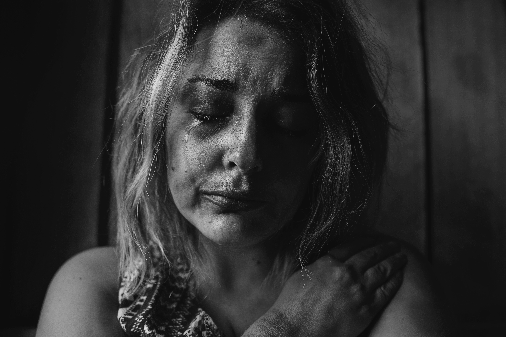

My Story

Growing up, the only thing I wanted to be was a programmer. One of my moms was a programmer and she would sometimes tell me about her work, showing me diagrams of program logic and databases, letting me see some of her code, and once or twice letting me listen in on her meetings. However, in my family, I had a role and a place. Because I was female, I was told how I would live, what I would do, and what I would like. When I was about seventeen, I was told to my face that because I was female, I was bound to the family and would abide by their words. However, if only I had been more intelligent or less creative and incomprehensible, perhaps there would have been an option to be a programmer despite all that. However, in comparison with my brother who had been identified as a genius in math when he was twelve, offered to attend college out of elementary, and my lack of "common sense" and having too much creativity, so I figure as I seemed often incomprehensible and weird to the one who said it, I was told by the mom whose occupation I admired that I was neither smart enough nor had the right mind for becoming a programmer.
Even though I took programming classes as part of the requisites for pre-engineering and informatics, and loved it, I stayed away from computer science, programmers and programming, and learned mostly through trial and error on my own. Regardless of compliments and encouragement from my peers and instructors, I always compared myself in a way that would discourage me. I tried to convince myself and others that I would become a designer, that it was right for me, and because of my interests and hobbies, it was not hard for others to believe me. Whether I believed myself did not matter as for the most part, I focused on staying on track, graduating, all the while afraid of losing the tenuous acceptance I received from my family until ultimately, I ran away.
Due to the sudden death of my father when I was five and the resulting environment of my upbringing, I developed and grew up with PTSD, and since no one outside saw or knew, and no one inside cared to consider or acknowledge me, I learned to hide and bear my sickness and pain to debilitating extremes. Being with people makes me very sick, and before, though I tried to avoid being with others any way I could, I was constantly forced to and left alone to "deal with myself" as I would say, so by the time I became an adult, I seemed to others to be intelligent, highly capable and adaptable, and "downright awesome [to work with]".
Perhaps it would have all worked out if I hadn't run away to China. When I went to China, as many good people I met and friends I made, I encountered trauma after trauma, one toxic environment or situation after another, and when I came back to the states, I carried with me a perpetual haze of exhaustion and fear. Given everything that happened, there's a part of me that thinks and believes it wouldn't have turned out so bad if I had stayed. But the truth that I've had to face is that:
No.
I would have broken myself down again and again anyway because that was what I had been conditioned to believe is required to live.
When I came back to the states in March 2020, I had burned out so much, been scared and sick so much, that I was tired of being and living. I told my family things to reassure them, but as the months went on, it became clear something was wrong with me, except since there was something already wrong at home, I was asked incessantly about getting a job and I reassured them instead of myself. It wasn't until the months I stayed in my childhood home with all three of my moms, my grandparents, visiting aunts and uncles, that I reached my limit. Constant hallucinations, nightmares, flashbacks, intrusive memories, my shame and the perceived but unconfirmed disappointment from my moms, I stopped eating and slept as much as I could during the day to bear through the waking nightmares at night.
I finally sought help, even as my family disapproved and was skeptical of therapy. I was even warned against it and though that warning was justified when I became homeless, I didn't fail to see how everything was connected, what might be good for me and what had proven again and again to be bad. For the last two years, I have been receiving therapy and been monitored monthly by doctors. The first year or so, I had therapy twice a week and met with my doctor and psychiatrist every two to three weeks. The situation and my relationship with my family has improved and become healthy, though I still suffer the stress of being around people and surrounded by stimulus when I visit them. I have close friends I see once a week and keep in touch with from abroad.
By chance, I found my latest job: a clerk at a paper goods store. It was only once a week and then twice a week for five hours a shift with lulls between customers lasting up to an hour. The store was quiet and not too bright or crowded with people and stuff. So I was able to work there for two years. It seemed I was better and living as a proper adult. But there was still the reality:
C-PTSD
Some people get better and it's gone, and some get better but it never goes away.
I lost my dad, and PTSD took his place.
Then the space was bought and the store closed, and I was left in the same situation as before. The only difference was two years of therapy down, monitoring my health, improved living conditions, and healthy, reassuring connections I could mostly rely on. At first, I thought of finding another job, most likely part-time because of my condition, but I was filled with enough dread to break down crying. In spite of that, as each week passed, it seemed more and more imminent, and I began preparing myself to resume suffering.
But who would want to live like this?
If I resigned myself to this way of life as it was going, why did I bother leaving China? Why did I bother running away? Did I get better after everything, just to go back?
These words, this realization, "to go back" was my greatest fear.

Back when I was staying in the homeless shelter, I tried to learn programming through Codecademy only to stop because of the cost. Months before the store closed, we were notified that it would close, so I tried again to learn programming, this time through a site called Zero to Mastery which had expanded from a course on Udemy into a Linkedin-accredited school with career paths and multiple instructors. I knew Zero to Mastery back from when it was just a course on Udemy because I had tried it my second year in China, but back then, I had neither the time, energy nor mental capacity for it. This second time that I tried to learn from the courses at Zero to Mastery, I found myself battling with ghosts.
I didn't remember, I didn't hear, but I felt the weight of twenty years of fear and pain building up with my frustration and increasing lack of focus. When I talked to my friends and family, they either didn't understand the full severity and implications or didn't have the words I needed to hear. I stopped. Everything. And the store hadn't even officially closed by this point.
I wanted, no, perhaps needed one thing.
A fighting chance.
So I looked at the options from the Employment Security Department, and hoped there was training for becoming a programmer. I was looking for guidance and structure. While I always asked for help and knew how to ask, this time, I figured I knew the actual help I needed. The program I decided on was the full-time web development course from Epicodus.
days to go
Final Statement
There are a lot more bumps than I've mentioned here, paving them over to provide a smooth, coherent through line. I also haven't gone into any specifics or full detail. As a young adult, I would have to turn people away, to impress upon them that they can't handle my burden, except wanting desperately for connection, I taught myself not to. As of the last few years or so, I would have gone into a long list of specifics, feeling I needed to convince others, to justify, to prove that I do have a condition to care for.
There is an awareness that we must be useful and responsible adults, to work and to work ourselves as much as we can, regardless of personal circumstances, or rather in spite of. While an awareness to the contrary is growing, it remains something of a privilege, not for men or caucasians, but for anyone who manages to be part of the upper-middle class and higher.
Poverty is a sinkhole
The harder you struggle, the deeper you sink.
If no one comes to help, give up on getting out.
I don't know if I'll be able to work full-time. I hope I can because for programmers, it's either full-time or self-employed. But I don't want to have to choose between being healthy but in perpetual need of the next paycheck to get by and spending my days just trying to recover from yesterday when I have the sickness and burnout of today to deal with.